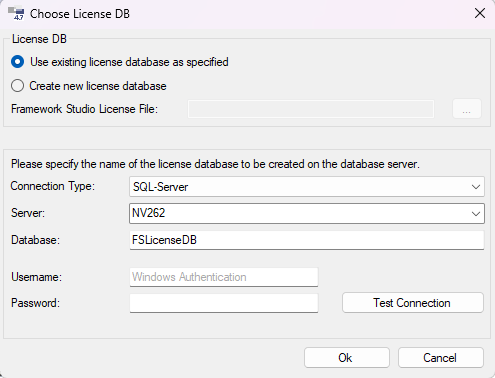

Lizenzverwaltung
Um mit Framework Studio arbeiten zu können müssen gültige Lizenzinformationen eingespielt werden. Dazu werden beim Starten von Framework Studio oder des Package Managers einige Verwaltungsmöglichkeiten angeboten.

Im Menüpunkt Licenses des Repository-Auswahl Dialogs gibt es die Unterpunkte Choose License Database ... und Manage Licenses, diese werden im Folgenden erläutert:
Choose License DB
Mit diesem Menüpunkt öffnet sich der Choose License DB Dialog. In ihm kann die Datenbank angegeben werden, in der die Lizenz für die Benutzung von Framework Studio abgelegt ist.

Wird Use existing license database ausgewählt, so kann eine bereits bestehende Datenbank über Eingabefelder im unteren Dialogbereich konfiguriert werden.
Wird Create new license database gewählt, kann eine neue Lizenzdatenbank erzeugt werden.
Dazu muss im Feld Framework Studio License File eine Lizenzdatei für Framework Studio angegeben werden.
Diese Lizenz wird dann in die neu erstellte Lizenzdatenbank kopiert.
Mit dem Button  wird ein Dateiauswahldialog geöffnet, mit dem die Lizenzdatei ausgewählt werden kann.
wird ein Dateiauswahldialog geöffnet, mit dem die Lizenzdatei ausgewählt werden kann.
Durch die folgenden Angaben wird die Lizenzdatenbank spezifiziert.
Connection Type
Typ der Datenbank. Zur Auswahl stehen SqlServer und Oracle (managed). Siehe hierzu Connection Einstellungen.
Server
Name oder IP Adresse des Rechners, auf dem die Datenbank eingerichtet werden soll. Auf diesem Rechner muss der entsprechende Datenbankdienst bereits installiert und in Betrieb sein.
Database
Name der Lizenzdatenbank.
Username
Name des Datenbank-Benutzers. Wird bei SQL-Server kein Benutzer angegeben, dann wird Windows-Authentifizierung verwendet.
Password
Passwort des Datenbank-Benutzers.
Mit dem Button Test Connection kann überprüft werden, ob mit den angegebenen Daten eine Verbindung zum Datenbanksystem hergestellt werden kann.
Mit dem Button OK werden die Angaben übernommen und gegebenenfalls das neue Repository erstellt.
Mit dem Button Cancel verlassen Sie den Dialog, ohne dass Änderungen übernommen werden.
Manage Licenses
Mit diesem Menüpunkt öffnet sich der Manage Licenses Dialog. Er bietet umfassende Möglichkeiten die Framework Studio Lizenzen zu verwalten.

Mit dem Button  (Import License) können Sie eine Lizenz-Datei importieren.
Es erscheint ein Datei-Auswahl-Dialog in dem Sie eine *.fslx-Datei auswählen können.
Nach der Auswahl wird die darin enthaltene Lizenz erstellt.
(Import License) können Sie eine Lizenz-Datei importieren.
Es erscheint ein Datei-Auswahl-Dialog in dem Sie eine *.fslx-Datei auswählen können.
Nach der Auswahl wird die darin enthaltene Lizenz erstellt.
Mit dem Button  (Export License) wird die im Baum markierte Lizenz in eine fslx-Datei exportiert.
(Export License) wird die im Baum markierte Lizenz in eine fslx-Datei exportiert.
Mit dem Button  (Delete) wird die im Baum markierte Lizenz gelöscht.
(Delete) wird die im Baum markierte Lizenz gelöscht.
Warning
Wenn Sie mehrere Lizenzen importieren, die für das aktuelle Datum und die aktuelle Version gültig sind, wird die Anzahl der Benutzer im User Limit nicht addiert. Es wird zufällig eine gezogen.